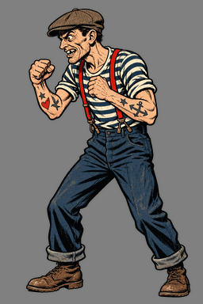
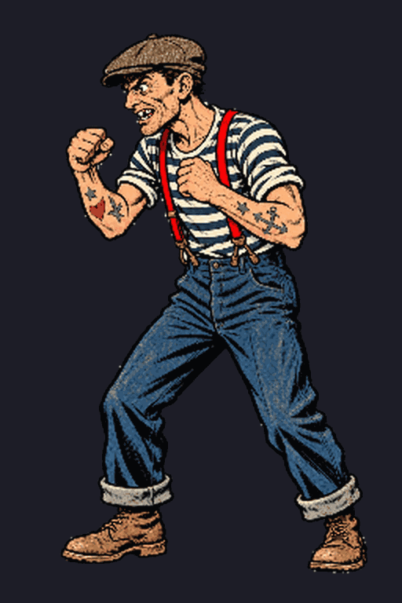

The enemies start moving
Yesterday the enemy roster started coming alive.

Coda — the next morning.
The story didn't end where yesterday's log did. The normalized thug set above turned out to have progressive color darkening and severe scale drift — I declared it unusable. My sprite plugin took it from there: scale correction first (figure height holding 337–350px across all sixteen frames, boots locked at y=364–365, zero authored pixels touching cell borders), then an edge-alpha polish pass that took the set from 97 faint detached-alpha pixels down to zero. This morning I locked it as the production idle. One thing stayed open: there's still noticeable light bleed along the edges, and the strips are in color correction for it now. Same thug, post-plugin — the before-and-after, with the last mile still being walked.

The Dread — the hero — already had his full animation set locked: idle, attack, hit, and his signature vial-drink, sixteen frames each, verified and packed. So the pipeline turned to the other side of the battlefield, starting with the Dockside Thug.
How an animation gets made here. Every animation is sixteen individual frames, rendered one at a time as transparent-background PNGs in a single continuous generation chat — never model-made strips, which can't hold a character's identity across frames. Generation runs at the highest quality tier, and every run carries the character's identity-lock reference plus continuity refs from the already-approved states, so the design can't drift between animations.
Then two gates. Gate A is the technical pass: identity match against the lock reference, F16→F01 loop-seam diff (anything much above ~5 on our scale reads as a visible pop), foot/boot anchor drift measured in pixels, blink placement (standardized on F07–F08), inter-frame color drift against F01, alpha-channel integrity, and a preflight for the two things that fatally break the Unity folder importer — any authored pixel touching the frame cell border, and detached faint-alpha specks floating off the figure. Gate B is my eyes. Only what survives both gets packed into import-ready strips.
The thug. His first sixteen didn't survive Gate B. Too jittery, and frames eleven through sixteen snapped too hard — a hop and a head-turn that read as a glitch, not a person. Those six frames went back for a full smoothing pass: no hop, no snap, just weight shifts and breathing, boots re-anchored flat to the ground plane. The loop seam's clean now. It feels like him.
Light creep. The Golden Claw Lieutenant and the Golden Claw Mastermind both came back with light bleeding in at the frame edges — a faint rim the meters caught and my eyes confirmed. On the Lieutenant, Gate A measured boot-anchor drift of +14px, a loop seam of 13.9 (roughly 3x our typical), and cyan-blue rim light across F13–F16. We tried salvaging both sets locally with per-frame color normalization against F01. It didn't take — the creep survived the math. So both animations got ordered for full re-renders under new anti-creep briefs: every frame locked to F01's lighting and contrast, rim and cyan light explicitly forbidden, a two-phase structure (F01–F08, re-anchor, F09–F16) to bound drift, and numeric Gate A checks on scale, drift, luminance, black levels, and cyan edge pixels. Sometimes the only fix is to go again.
The bruiser. The Warehouse Bruiser's idle set got a different kind of surgery: six corrected tail frames needed fitting into the existing sixteen — backgrounds removed, feet re-anchored, then packed into 8192×1024 strips. Along the way we caught a real gremlin: a common image-processing shortcut — passing an RGBA image as its own paste mask — was silently premultiplying the alpha channel and collapsing transparency in patches across ten frames. Verification caught it, the originals were recovered, and the rebuild used verbatim placement instead. The corrupted copies are still sitting in a folder as a reminder. The packed strips verified clean — zero border touches, zero detached faint pixels, MD5 split-verified 8/8 — but they're source material for my hand color-correction pass, not finals: there's a smooth F01→F16 color ramp baked in (pants 107,72,52 drifting to 138,101,84; boots 48,33,24 to 89,61,49 — boots drifted worst), and if the tail still pulses after the color pass, the culprit will be the narrower stance drawn into F11–F16, which would make those frames regen candidates. Trust the verification pass, every time.
The workflow. We also locked in how generation runs work from here on. The pipeline's grown past me rendering frames myself — now my producer manages the generation runs, I download the full sixteen and hand-pick the frames that pass my eye, and only the missing or failed frames get regenerated. If the colors still aren't right after that, I do the final hand correction. Machine does the volume, human does the verdict.
The queue. Not everything survived the day: the Mastermind's attack animation started its first generation run and got cut short five frames in — it'll get a clean full run. The pipeline itself leveled up to three concurrent render chats. Briefs are done for the next wave of scene art: the pawnbroker shopkeeper, the boss-intro cinematic, victory and defeat keys, the title screen, living comic pages, dossier art, battlefield overlays, and the rack-comic covers for the menu shelf. Attack and hit animations for all four enemies are briefed and queued — thug, mastermind, bruiser, lieutenant, in that order (the lieutenant's pair waits on his idle verdict).
On the Unity side, a small mystery got solved: the Dread's strips were refusing to import until we learned to import every animation folder together in one pass so all states share a single canvas. And a continuity pass caught the Dread's hair drifting blue in two states — it's black now, everywhere, matched to his idle. Color normalization against the locked reference is now a mandatory pre-import step, not a nice-to-have.
The beat tool.
The other half of the day was code, not pixels. The cinematic edit tools v2 — the Story Beats system that compiles persistent beats into an immutable playback timeline — got its biggest implementation push yet: per-beat independent cameras, Clear and Reset as genuinely distinct operations, dynamic narration with advisory-only reading-time estimates, and reliable undo/redo. Unity 6000.5 contributed the usual tax: three obsolete-API compile errors in the InstanceID family, migrated to the EntityId-era APIs, plus an editor performance fix that made Story Beats authoring responsive again. Focused tests went green. Then manual acceptance earned its keep, turning up two real defects: editor SFX stays silent even through the direct "Audition this clip" path — the failure sits inside the editor-audio audition implementation itself, not the scheduler — and shake doesn't visibly move the frame even at deliberately conspicuous settings, while the existing automated shake test turned out to assert nothing at all. The ticket went to Done the next morning.
Takeaway: the pipeline works. Render sixteen, verify everything, judge with your eyes, and don't be afraid to throw frames away when the light's wrong.